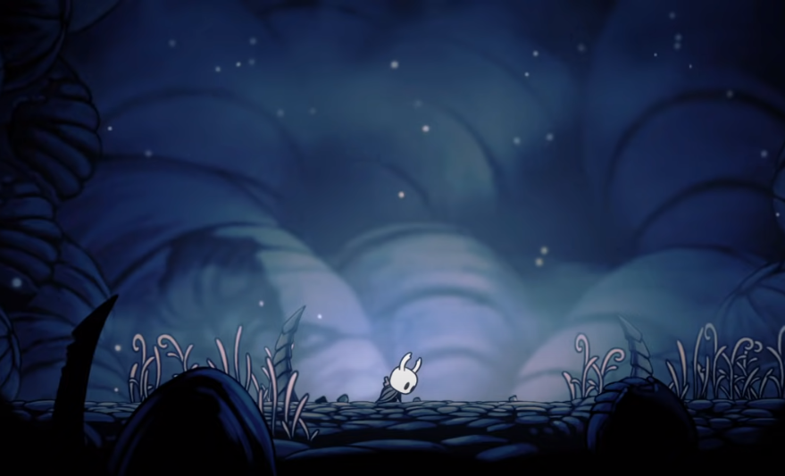

Main Story
The game is mainly played as a Metroidvania game, which mainly focus about map exploration. But there is still a main event for the player to follow.
At the beginning of the game, the Knight is equipped with only their Old Nail and the ability to heal themself using SOUL. Throughout the game, the Knight gains access to new powers, Items, and Charms to help them through their journey.

After encountering the Dreamers in the Resting Grounds, the Knight acquires the Dream Nail. With this weapon, they can break the Seals in the Temple of the Black Egg by killing each of the three Dreamers. This allows them to enter the Black Egg, where they can fight the Hollow Knight. If the Hollow Knight is faced before obtaining Void Heart Charm, the Knight kills their sibling and takes their place in sealing the Radiance.
The game has several endings that will happen depends on what choices that the player takes.
In addition, there are many more different lore hidden in the game that can be discovered by the player the more they play the game. The story of the Kingdom of Hallownest can be pieced together through dialogue, cutscenes, lore tablets, visual storytelling, and entries in the Hunter's Journal. While there are some ambiguous elements, in general, the information derived from these sources can provide a stable foundation for assembling the overall narrative. As long as all sources have been exhausted and taken into account, a player should, in their own right, have a general understanding of any lore topic.